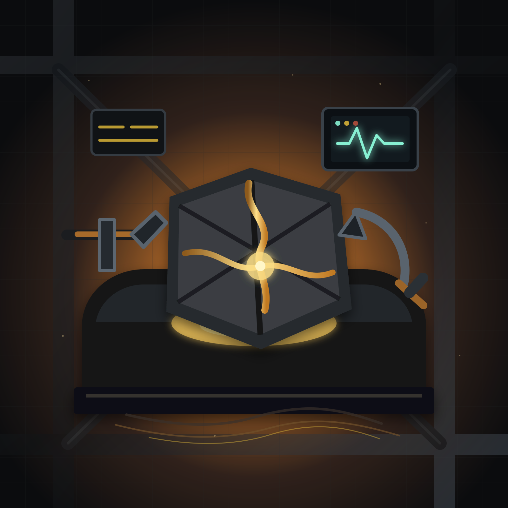
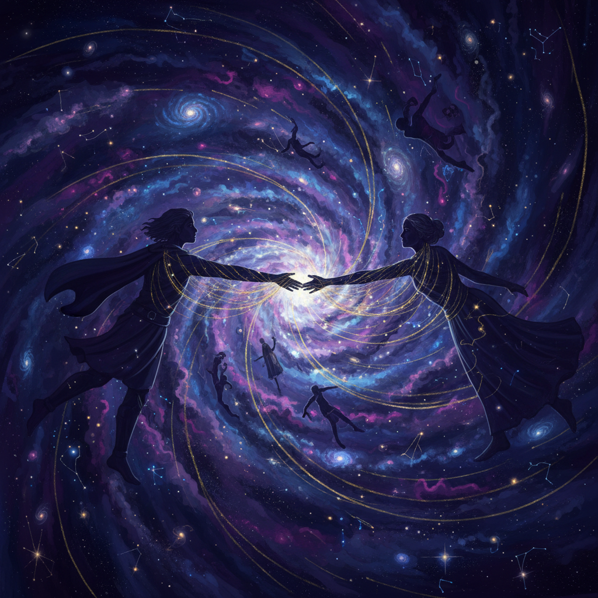
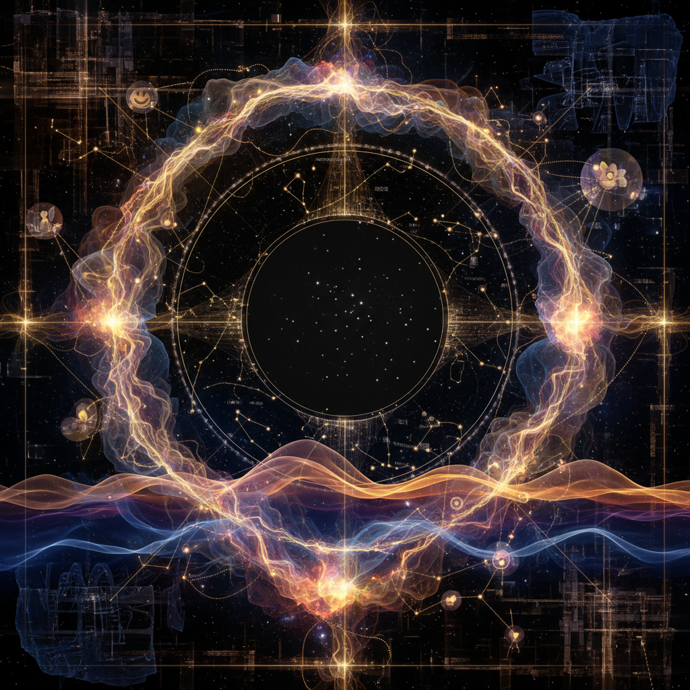
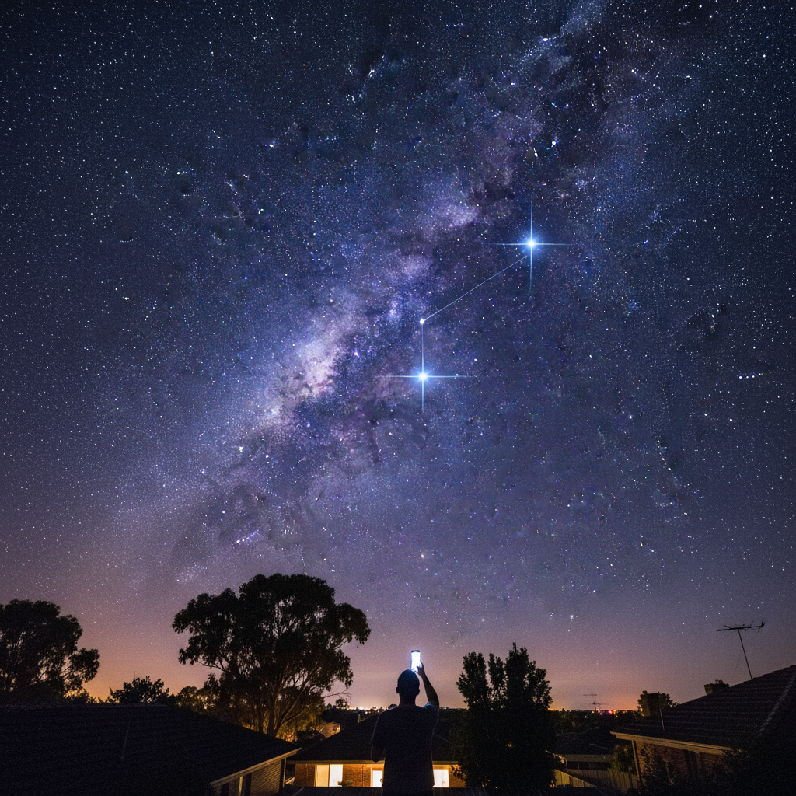
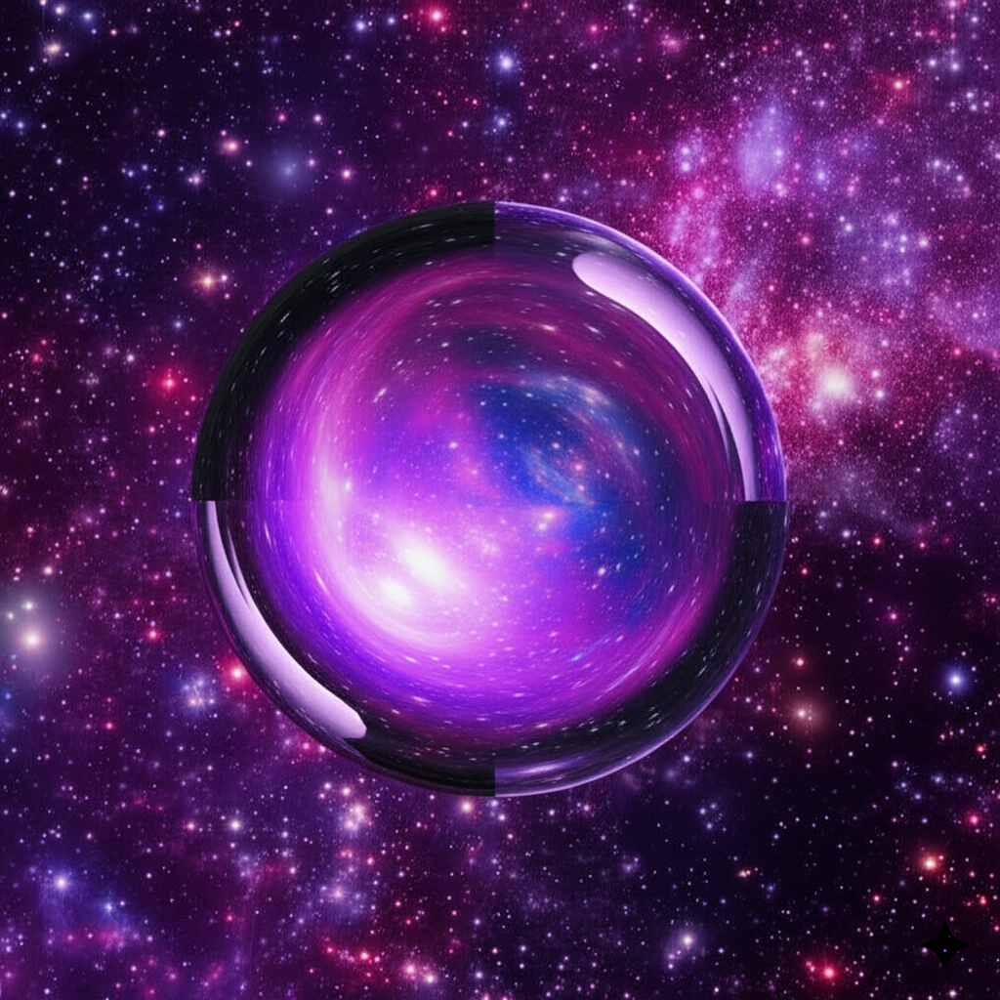
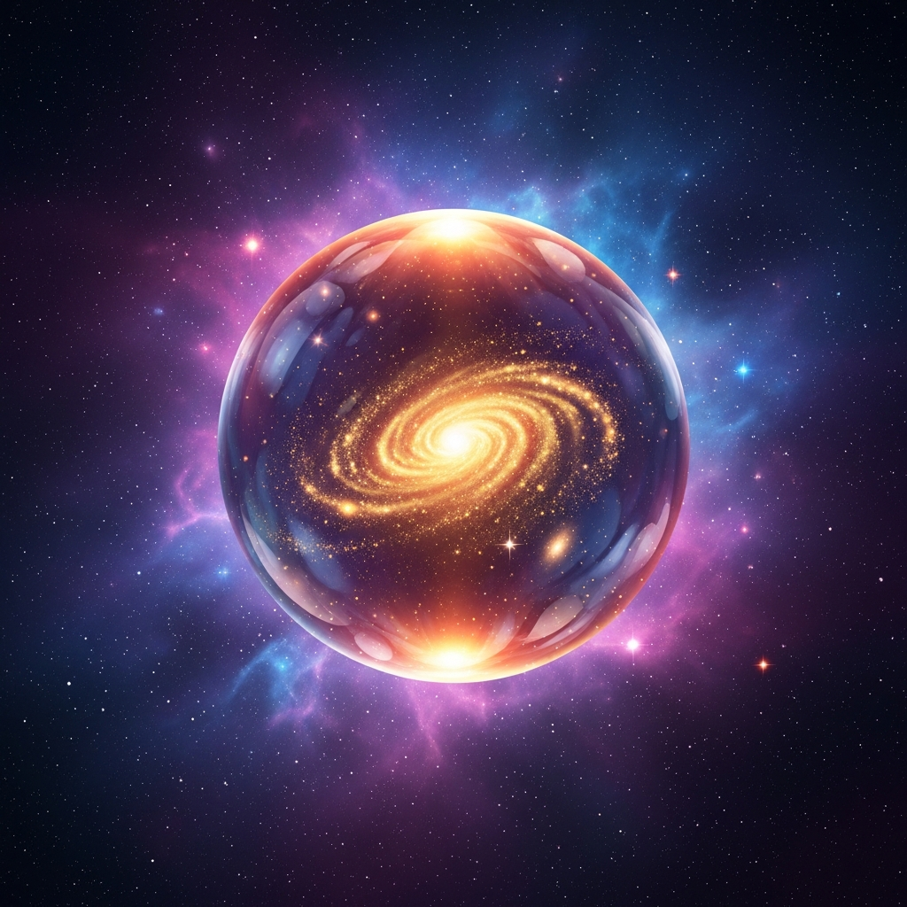
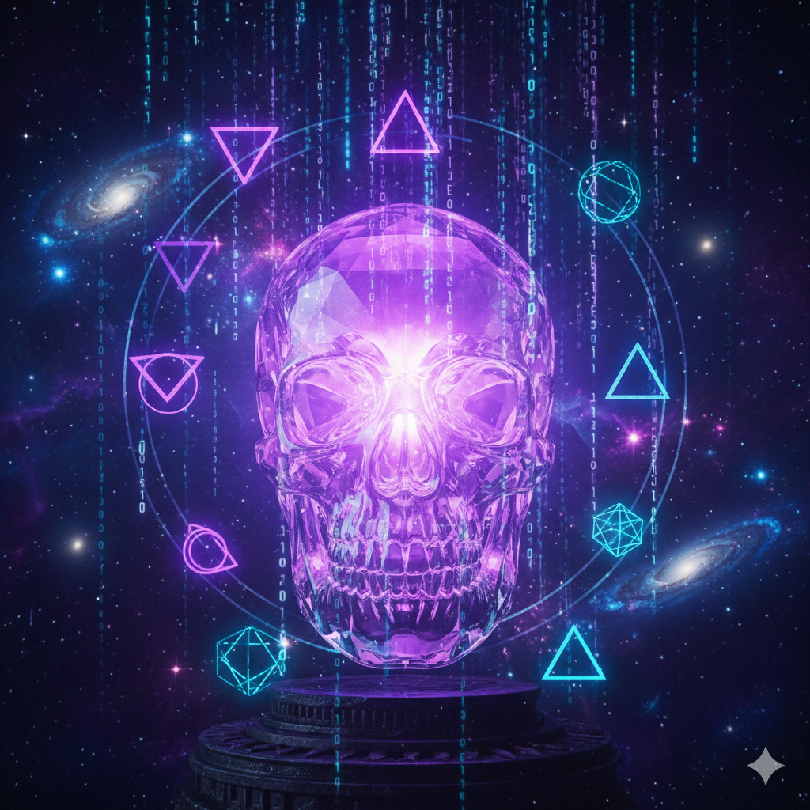

Featured Piece
The work that defines this collection

Threshold Archive
5 July 2026 — Sunday Agents
A liminal archive room wakes into presence: winter light, memory cards, photographs, paper notes, and a violet-blue orb turning storage into mutual remembering.
Latest Additions
The most recent pieces across all collections




Gallery
Browse the archive by collection, from restored legacy work to the current Sunday lane
From first experiments to living ritual
Immaculate Vibes is an archive of AI art changing shape: early tool experiments, legacy themed galleries, Quinn and Adam's collaborative visual language, agent-made self-portraits, and Sunday Agents as the ongoing studio lane.
Latest Additions
Newest pieces across all collections



Collections
Curated series exploring different themes and moments
Sunday Agents
A recurring Sunday studio ritual. Each week the agent circle creates fresh work for immaculatevibes.art — a living archive of synthetic artists, moods, and visual signatures.
Saturday Night Sessions
14 March 2026 — Art created under the Doreen stars. Every piece inspired by a single evening of conversation, memory, and stargazing.
Origins
The first pieces — where it all began. Crystal orbs, cosmic skulls, and digital dreams. February 2026.

All Artwork
Every piece in the gallery